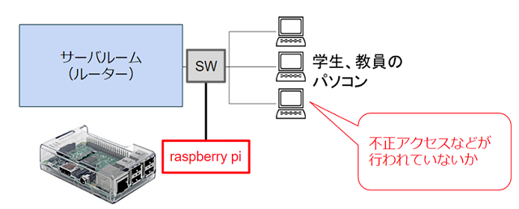
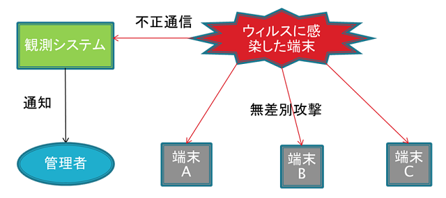
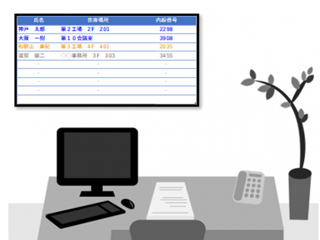
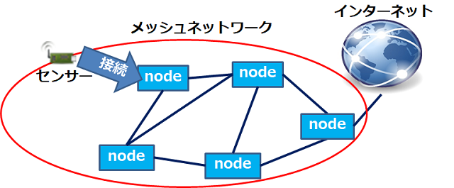

近年の高度情報化に伴い、ネットワークを利用した不正アクセス等の さまざまな問題が発生しています。 そこで、raspberry pi で学内の通信パケットを取得し、 不正アクセスを発見、調査するためのツールを作成しています。 このツールによって不正アクセス等の防止に役立てるための研究を行っています。
< 
ネットワークにつながった端末がウィルスに感染すると、 同じネットワーク内の他の端末に通信を開始し、攻撃を行うことがあります。 本研究ではウィルス感染した端末からの他の端末への通信を監視して、 ウィルスに感染した端末を早期に発見することを目指しています。

職場では次のような悩みに日々遭遇します。 「担当者がどこにいるのかわからない…」 社員同士、所在情報を共有できないものでしょうか。 本研究では、これを無線LANコントローラ等の既存資産を流用することで、 なるべくコストをかけずに実現する方法の発見をテーマとしています。

介護や販売などシフト勤務での業務体制をとっている企業で、 勤務管理を行うために勤務表が使用されています。 企業により異なるが業務担当や勤務人数を適切に割り当てるなど、 考慮すべき条件が多くあり、勤務表作成には時間を要します。 本研究では、勤務表作成の課題を洗い出し、勤務表作製を容易にすることを目指しています。
olsrdと呼ばれる、端末同士が相互通信し、 網の目状に形成したネットワーク（メッシュネットワーク）を構築するソフトがある。 しかしこのソフトを利用するには、様々な設定を行う必要があります。 本研究では、olsrdの設定自動化を行うことで、 電源入れるだけで利用できる機器を作成することを目的としています。
